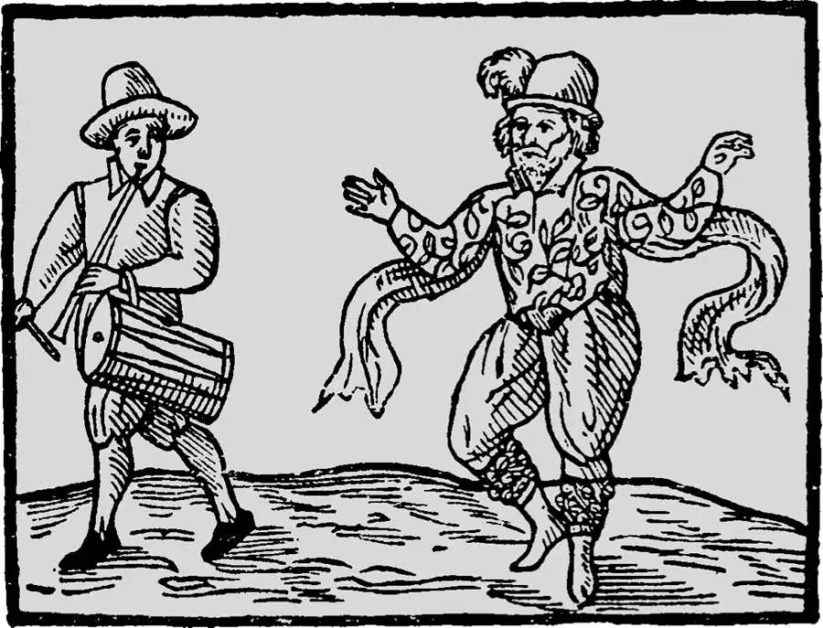

Will Kempe, company clown to the Lord Chamberlain's Men; he is shown with a man playing the tabor, a common instrument in the musical accompaniment to the plays.
威尔·肯普，宫内大臣剧团的专职小丑；其旁乐人正在演奏的塔波鼓，是当时戏剧演出时常用的伴奏乐器。